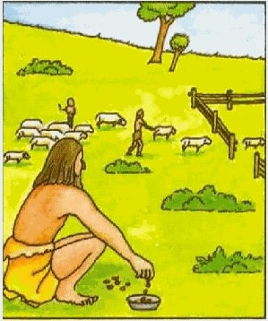

Remotamente en los inicios del comercio hace miles de años, ya se usaban herramientas matemáticas que resolvían infinidad de problemas, sin embargo, ya se comenzaba a utilizar el método científico y fue hasta la revolución industrial con el nacimiento de fábricas cuando comenzó a usarse más frecuentemente dando lugar a la aplicación de técnicas cuantitativas que apoyaron en la toma de decisiones en el siglo XX, donde se hicieron desarrollos importantes en cuanto a modelado matemático, en especial para el control de inventarios, análisis de líneas de espera, control de calidad y programación de la producción.

Extraído de: http://discovery-web.over-blog.es/article-origen-historicos-de-los-numeros-46593885.html
Frederick W. Taylor con su publicación “principios de la administración científica” en 1911 fue el primero en usar el método científico donde explicó cuál era la forma óptima de desarrollar un trabajo al involucrar el proceso de toma de decisiones.
La aplicación masiva de la Investigación de Operaciones (I.O.) y de los métodos cuantitativos fue a inicios de la 2° Guerra Mundial, cuando los aliados liderados por Inglaterra, Francia, Unión Soviética y Estados Unidos convocaron a los mejores científicos de sus países para que aplicara un enfoque científico para abordar problemas logísticos y tácticos que enfrentaban las fuerzas armadas.
Tanto fue el éxito de la I.O. y de los métodos cuantitativos en las actividades bélicas que género un gran interés en aplicarlo en las empresas. Otro importante momento para la I.O. fue el descubrimiento del Método Simplex en 1947 por George Dantzing para resolver problemas de programación lineal, apoyándose con la aparición de las primeras computadoras.